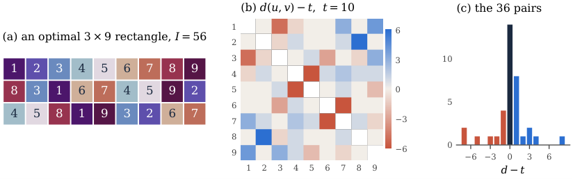
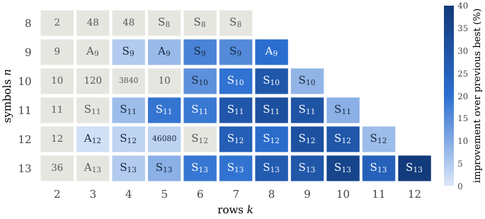

Lean 4 kernel certifies all reported Latin rectangles against a 74-line core-only specification, and the pigeonhole cubic lower bound is proved with Mathlib.
Abstract
We view a $k\times n$ Latin rectangle as $n$ points in the grid $[n]^k$. Each symbol gives one point, whose coordinates are the columns it occupies. The rectangle is balanced when these points are pairwise equidistant in the $\ell_1$ metric. Its imbalance measures the distance from this ideal. We study the minimum imbalance from three sides. Constructively, we use a simulated annealing that moves symbols within rows and only penalises column clashes. Against the reference table of Voboril et al. (2025), it improves 33 of the 51 non-square values for $8\le n\le 13$, by up to 39.4%, and matches the rest. A cheap invariant, the row group, certifies that none of the 33 new rectangles is isotopic to rows of a group table, so the earlier column-swapping local search cannot reach any of them. Exactly, a computer-assisted branch and bound proves that the minimum imbalance of a $3\times 9$ rectangle is $56$. Díaz et al. found this value, but its optimality was open. A sharper pruning bound, derived from the identity $I=2\sum(d-t)^+$, reduces the search tree by a factor of $2.4$ to $3.3$ on the instances with $k\ge3$ that we solve. Asymptotically, the minimum imbalance is $Θ(n^3)$ for every fixed $k$. A pigeonhole argument gives a lower constant of order $k\,4^{-k}$, and random rectangles give an upper constant of order $\sqrt k$. For $k=2$, the limit of $\min I/n^3$ exists, a permuton attains it, and it lies between $4/375$ and $0.1196$. Perfect balance is an $\ell_1$-equilateral problem, so it forces $k=Ω(n/\log n)$ rows. For $2\times n$ rectangles, single two-minute annealing runs improve five of the seven six-hour MIP upper bounds for $14\le n\le 20$. Finally, the Lean 4 kernel checks every rectangle reported in this paper against a 74-line specification that imports only Lean's core library. We also prove the pigeonhole lower bound in Lean with Mathlib.
Problem
A k×n Latin rectangle can be viewed as n points in [n]^k, and its imbalance measures how far these points are from being pairwise ℓ1-equidistant. The minimum imbalance is known only for small cases, and its optimality and growth rate were open for many sizes.
Approach
Simulated annealing keeps each row a permutation and turns column clashes into an adaptive penalty. A branch and bound with a sharper pruning bound, derived from I=2∑(d−t)^+, proves exact optima. A row-group invariant certifies that the new rectangles are not isotopic to rows of a group table. A pigeonhole argument gives asymptotic bounds; the Lean 4 kernel checks all 62 reported rectangles without Mathlib or native_decide, and the identity and lower bound are formalized with Mathlib.
Results
Annealing improves 33 of 51 benchmark values for 8≤n≤13 (by up to 39.4%) and matches the rest. The minimum imbalance of a 3×9 rectangle is proven to be 56. The minimum imbalance is Θ(n^3) for every fixed k, and annealing improves five of seven 2×n MIP upper bounds for 14≤n≤20.

Figure 1: A 3\times 9 rectangle of imbalance 56 , which Theorem 2 proves optimal. (a) The rectangle, one colour per symbol. (b) The deviation d(u,v)-t of every pair from the average distance t=10 . Blue pairs are too far apart and red pairs too close. (c) Histogram of the 36 deviations. They sum to zero, and I=\sum\lvert d-t\rvert=56 .

Figure 3: Row groups of our best rectangles in the benchmark range. Shading shows the improvement over the previous best value, and grey cells are matched records. Each label gives the row group: \mathrm{S}_{n} or \mathrm{A}_{n} , otherwise its order. For k=2 the row group is cyclic, generated by one permutation. It still certifies non-group structure when its order does not divide n .
n
14
16
18
20
upper bound [10]
268.0
427.3
617.3
816.0
annealing
268.0
422.0
610.6
832.0
2×n rectangles: best prior MIP upper bounds vs. 2-minute annealing (selected n)